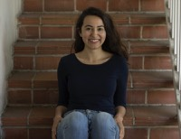
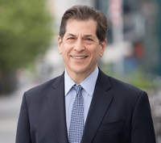
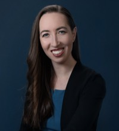
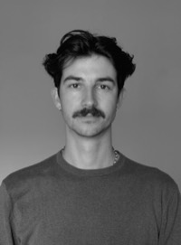

Workshop leaders
People who led workshops, masterclasses and trainings. 72 people, most editions first.
Filmmakers 283Moderators 91Panelists & speakers 686Workshop leaders 72Journalists behind the films 4Film subjects 57Honorees 1Festival team 116
 Theodore FrankPanelist, festival team, workshop leader · 7 editions, 2017–2025Arnold & Porter Kaye Scholer (retired partner)
Theodore FrankPanelist, festival team, workshop leader · 7 editions, 2017–2025Arnold & Porter Kaye Scholer (retired partner) Katie TownsendPanelist, workshop leader, moderator · 6 editions, 2015–2023Reporters Committee for Freedom of the Press
Katie TownsendPanelist, workshop leader, moderator · 6 editions, 2015–2023Reporters Committee for Freedom of the Press
 Harlo HolmesWorkshop leader, panelist, moderator · 5 editions, 2015–2026Freedom of the Press Foundation
Harlo HolmesWorkshop leader, panelist, moderator · 5 editions, 2015–2026Freedom of the Press Foundation


 Jennifer NelsonPanelist, workshop leader · 4 editions, 2022–2026Reporters Committee for Freedom of the Press
Jennifer NelsonPanelist, workshop leader · 4 editions, 2022–2026Reporters Committee for Freedom of the Press Susanne ReberFestival team, panelist, workshop leader · 4 editions, 2018–2022E. W. Scripps Washington Bureau
Susanne ReberFestival team, panelist, workshop leader · 4 editions, 2018–2022E. W. Scripps Washington Bureau
 Lisa ZychermanPanelist, workshop leader · 4 editions, 2018–2023Reporters Committee for Freedom of the Press
Lisa ZychermanPanelist, workshop leader · 4 editions, 2018–2023Reporters Committee for Freedom of the Press


 Sonia KennebeckPanelist, filmmaker, workshop leader · 3 editions, 2017–2021
Sonia KennebeckPanelist, filmmaker, workshop leader · 3 editions, 2017–2021 Sig LibowitzModerator, panelist, workshop leader · 3 editions, 2024–2026JHU AAP Graduate Film and Media Program
Sig LibowitzModerator, panelist, workshop leader · 3 editions, 2024–2026JHU AAP Graduate Film and Media Program Judith MatloffPanelist, workshop leader · 3 editions, 2017–2024Columbia Graduate School of Journalism
Judith MatloffPanelist, workshop leader · 3 editions, 2017–2024Columbia Graduate School of Journalism Michael RezendesPanelist, moderator, workshop leader · 3 editions, 2015–2023
Michael RezendesPanelist, moderator, workshop leader · 3 editions, 2015–2023

- Eric FederPanelist, workshop leader · 2 editions, 2023–2025Reporters Committee for Freedom of the Press
- Johanna HamiltonFilmmaker, panelist, workshop leader · 2 editions, 2015–2018
- Judith HelfandPanelist, workshop leader, festival team · 2 editions, 2021–2022Chicken & Egg Pictures
 Ines Hofmann KannaWorkshop leader, panelist · 2 editions, 2017–2021
Ines Hofmann KannaWorkshop leader, panelist · 2 editions, 2017–2021
- Penny LaneFilmmaker, workshop leader · 2 editions, 2016–2018

 Laurent RichardPanelist, workshop leader · 2 editions, 2018–2021
Laurent RichardPanelist, workshop leader · 2 editions, 2018–2021 Gunita SinghWorkshop leader, panelist · 2 editions, 2019–2022Reporters Committee for Freedom of the Press
Gunita SinghWorkshop leader, panelist · 2 editions, 2019–2022Reporters Committee for Freedom of the Press Poh Si TengPanelist, workshop leader · 2 editions, 2018–2021
Poh Si TengPanelist, workshop leader · 2 editions, 2018–2021 cai thomasFilmmaker, panelist, workshop leader · 2 editions, 2019–2023
cai thomasFilmmaker, panelist, workshop leader · 2 editions, 2019–2023




- Nima FatemiWorkshop leader · 2018
- Eleanor Bell FoxWorkshop leader · 2017


 Miranda Rose HallWorkshop leader · 2023
Miranda Rose HallWorkshop leader · 2023



Chelsea KellyWorkshop leader · 2025


- Shola LynchWorkshop leader · 2018Schomburg Center for Research in Black Culture, The New York Public Library



- Heidi ReinbergWorkshop leader · 2019

 Jennifer SmartWorkshop leader · 2025
Jennifer SmartWorkshop leader · 2025- Jeffrey SterlingPanelist, workshop leader · 2019